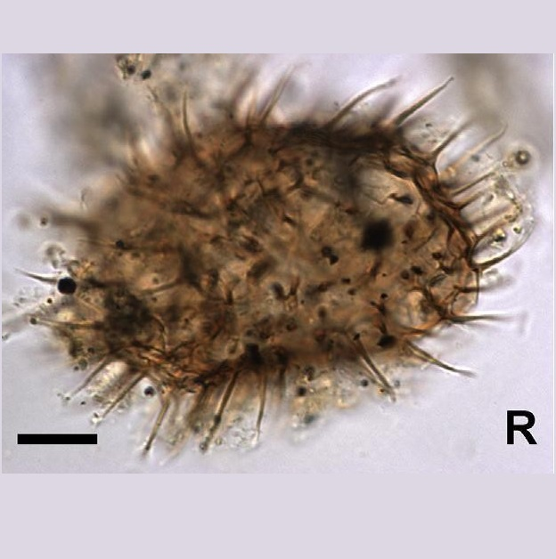
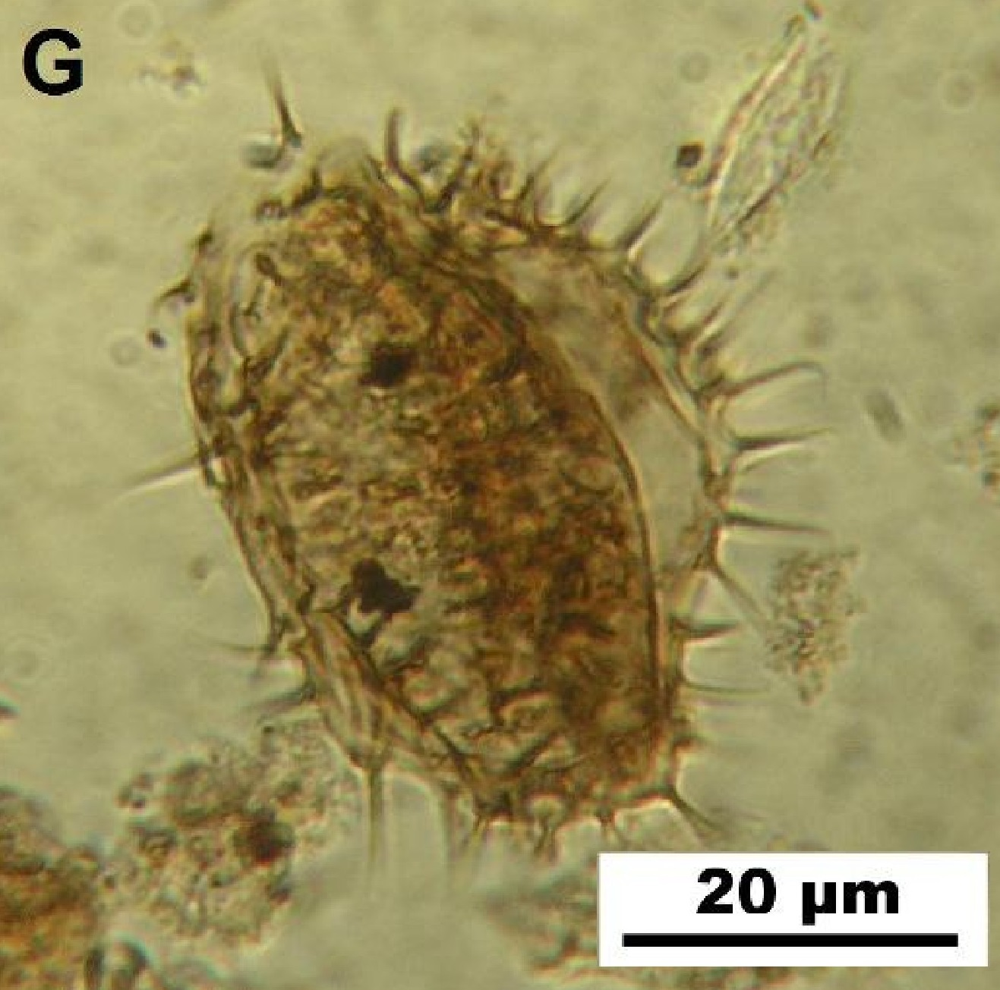

CYSTS LIST
- Alexandrium catenella
- Alexandrium kutnerae
- Alexandrium margalefi
- Alexandrium minutum
- Alexandrium peruvianum
- Alexandrium pseudogoniaulax
- Alexandrium tamarense
- Alexandrium taylori
- Alexandrium spp.
- Archaeperidinium bailongense, cyst of
- Archaeperidinium constrictum, cyst of
- Archaeperidinium minutum, cyst of
- Archaeperidinium monospinum, cyst of
- Archaeperidinium saanichi, cyst of
- Archaeperidinium sp., cyst of
- Ataxiodinium choane
- Ataxiodinium confussum
- Ataxiodinium zevenboomii
- Ataxiodinium sp.
- Biecheleria baltica
- Biecheleria cincta
- Biecheleria sp.
- Bitectatodinium spongium
- Bitectatodinium tepikiense
- Bitectatodinium sp.
- Brigantedinium assymmetricum
- Brigantedinium auranteum
- Brigantedinium cariacoense
- Brigantedinium majusculum
- Brigantedinium simplex
- Brigantedinium sp.
- Caspidinium rugosum
- Cryodinium matsuokai
- Cryodinium sp.
- Cryodinium meridianum
- Dalella chathamensis
- Diplopelta symmetrica, cyst of
- Dubridinium caperatum, cyst of
- Dubridinium cassiculum, cyst of
- Dubridinium cavatum, cyst of
- Dubridinium ulsterum, cyst of
- Dubridinium spp., cyst of
- Echinidinium aculeatum
- Echinidinium bispiniformum
- Echinidinium delicatum
- Echinidinium karaense
- Echinidinium granulatum
- Echinidinium sleipnerensis
- Echinidinium transparantum
- Echinidinium zonneveldiae
- Gymnodinium catenatum, cyst of
- Gymnodinium inusitatum, cyst of
- Gymnodinium microreticulatum, cyst of
- Gymnodinium nolerii, cyst of
- Gymnodinium trapeziforme, cyst of
- Impagidinium aculeatum
- Impagidinium caspienense
- Impagidinium pallidum
- Impagidinium paradoxum
- Impagidinium patulum
- Impagidinium plicatum
- Impagidinium sphaericum
- Impagidinium strialatum
- Impagidinium variaseptum
- Impagidinium velorum
- Islandinium brevispinosum
- Islandinium? cezare
- Islandinium minutum
- Leipokatium invisitatum
- Lejeunecysta acuminate
- Lejeunecysta adeliensis
- Lejeunecysta attenuata
- Lejeunecysta beinenensis
- Lejeunecysta catomus
- Lejeunecysta communis
- Lejeunecysta cowiei
- Lejeunecysta epidoma
- Lejeunecysta fallax
- Lejeunecysta globosa
- Lejeunecysta granosa
- Lejeunecysta hyalina
- Lejeunecysta katatonos
- Lejeunecysta lata
- Lejeunecysta marieae
- Lejeunecysta oliva
- Lejeunecysta paratenella
- Lejeunecysta pulchra
- Lejeunecysta rotunda
- Lejeunecysta sabrina
- Lejeunecysta sp.
- Lingulodinium machaerophorum
- Nematosphaeropsis labyrinthus
- Nematosphaeropsis lemniscata
- Nematosphaeropsis rigida
- Nematosphaeropsis scala
- Nematosphaeropsis spp.
- Nia acanthocysta
- Oblea acathocysta, cyst of
- Operculodinium aguinawense
- Operculodinium centrocarpum
- Operculodinium israelianum
- Operculodinium janduchenei
- Operculodinium longispinigerum
- Operculodinium piaseckii
- Operculodinium tegillatum
- Operculodinium microtriainum
- Operculodinium sp.
- Pentapharsodinium dalei
- Peridinium ponticum
- Polykrikos kofoidii, cyst of
- Polykrikos schwartzii, cyst of
- Polykrikos hatmannii, cyst of
- Polykrikos quadratus, cyst of
- Polykrikos sp., cyst of
- Polysphaeridium zoharyi
- Protoperidinium americanum, cyst of
- Protoperidinium conicoides, cyst of
- Protoperidinium fukuyoi, cyst of
- Protoperidinium lewisiae, cyst of
- Protoperidinium monospinum, cyst of
- Protoperidinium parthenopes, cyst of
- Protoperidinium thulensense, cyst of
- Protoperidinium tricingulatum, cyst of
- Pyxidinopsis psilata
- Pyxidinopsis reticulata
- Qia_lebouriae
- Quinquecuspis concreta
- Scrippsiella acuminata
- Scrippsiella crystallina
- Scrippsiella erinaceus
- Scrippsiella spinifera
- Scrippsiella triffida
- Scrippsiella trochoidea
- Selenopemphix antarctica
- Selenopemphix armageddonensis
- Selenopemphix brevispinosum
- Selenopemphix brinkhuisii
- Selenopemphix conspicua
- Selenopemphix coronata
- Selenopemphix crenata
- Selenopemphix dionaeacysta
- Selenopemphix islandensis
- Selenopemphix nephroides
- Selenopemphix quanta
- Selenopemphix tholus
- Selenopemphix undulata
- Selenopemphix sp.
- Spiniferites alaskensis
- Spiniferites asperulus
- Spiniferites belerius
- Spiniferites bentorii
- Spiniferites cruciformis
- Spiniferites delicatus
- Spiniferites elongatus
- Spiniferites frigidus
- Spiniferites hainanensis
- Spiniferites hyperacanthus
- Spiniferites lazus
- Spiniferites ludhamensis
- Spiniferites membranaceus
- Spiniferites mirabilis
- Spiniferites multisphaerus
- Spiniferites pachydermus
- Spiniferites pacificus
- Spiniferites spinatus
- Spiniferites splendidus
- Spiniferites ramosus
- Stelladinium abei
- Stelladinium bifurcatum
- Stelladinium denticulatum
- Stelladinium reidii
- Stelladinium robustum
- Stelladinium stellatum
- Stelladinium spp.
- Tectatodinium pellitum
- Trinovantedinium applanatum
- Trinovantedinium ferugnomatum
- Trinovantedinium glorianum
- Trinovantedinium harpagonium
- Trinovantedinium pallidifulvum
- Trinovantedinium variabile
- Trinovantedinium sp.
- Tuberculodinium vancampoae
- Votadinium bengalensis
- Votadinium calvum
- Votadinium concavum
- Votadinium elongatum
- Votadinium nanhaiense
- Votadinium pontifossatum
- Votadinium psilodora
- Votadinium reidii
- Votadinium rhomboideum
- Votadinium spinosum
- Xandarodinium xanthum
SELENOPEMPHIX QUANTA
Color: *Brown. **Light to medium brown.
Surface: **Smooth.
Shape: *Peridinioid, pentagonal outline. **Subspherical to reniform in polar view.
Central body: **48 to 60 um. (diameter).
Process length: **5 to 10 um. (length).
Process: *With spines/processes. Numerous processes along two cingular rims. Processes on apical and antapical horns. **Solid sometimes with expanded bases. Hollow at the base, otherwise solid. Numerous spines. Sharp and blunt terminations.
Archeopyle: **Archeopyle is 2a intercalary, elongated with rounded angles, rows of processes along both of the cingular edges.
Paratabulation: **Along cingular margins and in rows on the epicyst and hypocyst, but not in the sulcus.
Septa: -
Sulcus: -
Distiguishing characteristics: **Processes length, and its very characteristic rows of processes along both of the cingular edges.
Differs from:
Protoperidinium nudum: **in having bigger processes.
DESCRIPTION:
Polar compressed peridinioid cyst with a subcircular to slightly reniform outline in polar view. The smooth wall is light to medium brown. Sturdy and rigid processes taper to sharp or blunt points and become solid distally. Processes occur along both cingular margins and are distributed with variable density on the epi and hypocyst, but not in the sulcus. Two flagellar scars may be visible within the sulcus. Archeopyle elongated in outline, formed by loss of the second anterior intercalary plate (2a); its margin has rounded angles and its position is nearly symmetrical to slightly offset to the right of the mid-dorsal line. (Extracted from Van Nieuwenhove et al., 2020).
LOWEST STRATIGRAPHIC OCCURRENCE:
Upper Oligocene of northwest Italy (Powell, 1986; Zevenboom, 1996; Brinkhuis et al., 2003). (Extracted from Van Nieuwenhove et al., 2020).
IMAGES:
| 1 | 2 | 3 |
| 4 | 5 | 6 |
| 7 | 8 | 9 |
| 10 | 11 | 12 |
| 13 | 14 | 15 |
| 16 |
IMAGES REFERENCE:
1. Selenopemphix quanta. Scale bar: 10 um. Photomicrographs from Arroyo Baliza site. LGCAB15: D21. (Candel et al., 2017 - Figure 2-Q).
2. Selenopemphix quanta. Scale bar: 10 um. Photomicrographs from Arroyo Baliza site. LGCAB16: B14/2. (Candel et al., 2017 - Figure 2-R).
3. Selenopemphix quanta. Scale bar: 10 um. Photomicrographs from Arroyo Baliza site. LGCAB1: P22/2. (Candel et al., 2017 - Figure 2-S).
4. Selenopemphix quanta. Bright-field photomicrographs of selected dinoflagellate cysts and marine palynomorphs found in surface sediments from southern South Korea. Scale bar: 10 um. (Pospelova & Kim, 2010 - Plate 2-B).
5. Selenopemphix quanta. Bright-field photomicrographs of selected dinoflagellate cysts and marine palynomorphs found in surface sediments from southern South Korea. Scale bar: 10 um. (Pospelova & Kim, 2010 - Plate 2-C).
6. Selenopemphix quanta. Micrographs of selected dinocyst taxa. Scale bar: 10 um. (Cuéllar-Martínez et al., 2018 - Figure 3-19).
7. Selenopemphix quanta. Dinoflagellate cysts from the Verrebroek Dock (VBD) section. Apical view of upper surface, CBW: 45 um. Sample VBD 2.9 p1, X39/2 (Louwye et al., 2004 - Figure 11-g).
8. Selenopemphix quanta. (Daghor et al., 2016 - Plate 1-G).
9. Selenopemphix quanta. Reworked specimens of Impletosphaeridium clavus recorded from the Cenozoic diamictites (Pliocene) at Ekelof Point, James Ross Island and Cape Lamb diamictite (Pleistocene) from Vega Island, Antarctica and from Recent (Holocene) sediments of the Beagle Channel, Tierra del Fuego, Argentina. UNSP FCB 2347-2, J44/2. Scale bar: 10 um. (Amenabar, 2014 - Plate 3-18).
10. Selenopemphix quanta. Reworked specimens of Impletosphaeridium clavus recorded from the Cenozoic diamictites (Pliocene) at Ekelof Point, James Ross Island and Cape Lamb diamictite (Pleistocene) from Vega Island, Antarctica and from Recent (Holocene) sediments of the Beagle Channel, Tierra del Fuego, Argentina. UNSP FCB 2347-5, W20/4. Scale bar: 10 um. (Amenabar, 2014 - Plate 3-19).
11. Selenopemphix quanta. Bright-field photomicrographs of selected dinoflagellate cysts. UVic 09-78, slide 3, B29/0; dorsal surface (Bringué et al., 2013 - Plate III-3).
12. Selenopemphix quanta. Bright-field photomicrographs. 57-8B. Scale bar: 10 um. (Van Hauwaert, 2016 - Plate IV-1).
13. Selenopemphix quanta. Bright-field photomicrographs. 57-8B. Scale bar: 10 um. (Van Hauwaert, 2016 - Plate IV-2).
14. Selenopemphix quanta. Selected dinoflagellate cysts from the Nordland Group mudstone of Norwegian sector well 15/9-A-A11 at 906 m. depth. Antapical view at mid focus, CBW: 54 um. Specimen MPK 12795, slide 1, C18/0 (Head et al., 2004 - Figure 3-L).
15. Selenopemphix quanta. Photomicrographs of heterotrophic dinoflagellate cysts recorded from Jeju Island. Scale bar: 50 um. (Park et al., 2016 - Plate 2-4).
16. Selenopemphix quanta. Bright-field photomicrographs. UVic 09-394, slide 1, L53/1. Antapical surface, UVic 09-153, slide 1, T48/2. Apical surface. Scale bar: 20 um. (Price & Pospelova, 2011 - Plate III-9).
BIBLIOGRAPHY:
- Amenábar, C. R., Candel, M. S., & Guerstein, G. R. (2014). Small Antarctic Late Cretaceous chorate dinoflagellate cysts: biological and palaeoenvironmental affinities. Palynology, 38(2), 303-323.
- Bringué, M., Pospelova, V., & Pak, D. (2013). Seasonal production of organic-walled dinoflagellate cysts in an upwelling system: a sediment trap study from the Santa Barbara Basin, California. Marine Micropaleontology, 100, 34-51.
- Candel, M. S., Louwye, S., & Borromei, A. M. (2017). Reconstruction of the late Holocene paleoenvironment of the western Beagle Channel (Argentina) based on a palynological analysis. Quaternary international, 442, 2-12.
- Cuellar-Martinez, T., Alonso-Rodríguez, R., Ruiz-Fernández, A. C., de Vernal, A., Morquecho, L., Limoges, A., ... & Sanchez-Cabeza, J. A. (2018). Environmental forcing on the flux of organic-walled dinoflagellate cysts in recent sediments from a subtropical lagoon in the Gulf of California. Science of The Total Environment, 621, 548-557.
- Daghor, L., Hssaïda, T., Chakir, S., Slimani, H., Mouflih, M., Hamoumi, N., ... & EL BOUHMADI, K. (2016). Etude des kystes de dinoflagellés des sédiments de surface du système lagunaire atlantique marocain Oualidia-Sidi Moussa et de la lagune méditerranéenne de Nador. Bull. l’Institut Sci. Rabat, Sect. Sci. la Terre, 38, 1-18.
- Head, M. J., Riding, J. B., Eidvin, T., & Chadwick, R. A. (2004). Palynological and foraminiferal biostratigraphy of (upper Pliocene) Nordland Group mudstones at Sleipner, northern North Sea. Marine and Petroleum Geology, 21(3), 277-297.
- Louwye, S., Head, M. J., & de Schepper, S. (2004). Dinoflagellate cyst stratigraphy and palaeoecology of the Pliocene in northern Belgium, southern North Sea Basin. Geological Magazine, 141(3), 353-378.
- Park, B., Kim, Y., & Yoon, Y. H. (2016). Distribution of dinoflagellate cysts in surface sediments of the coastal areas around Jeju Island, Korea. Journal of the Korean Society for Marine Environment & Energy, 19(4), 310-321.
- Pospelova, V., & Kim, S. J. (2010). Dinoflagellate cysts in recent estuarine sediments from aquaculture sites of southern South Korea. Marine Micropaleontology, 76(1-2), 37-51.
- Price, A. M., & Pospelova, V. (2011). High-resolution sediment trap study of organic-walled dinoflagellate cyst production and biogenic silica flux in Saanich Inlet (BC, Canada). Marine Micropaleontology, 80(1-2), 18-43.
- Van Hauwaert, T. (2016). Recent dinoflagellate cysts from the Chesapeake Estuary (Maryland and Virginia, USA): taxonomy and ecological preferences (Doctoral dissertation, M. Sc. Thesis, Ghent University, Ghent, Belgium). (**)
- Zonneveld, K. A., & Pospelova, V. (2015). A determination key for modern dinoflagellate cysts. Palynology, 39(3), 387-409. (*)